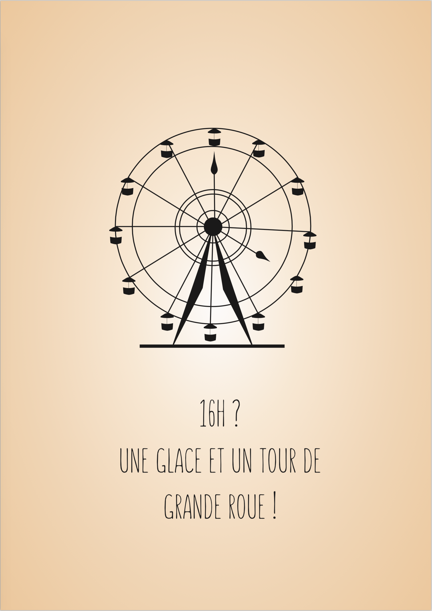

Mon objectif était ici d’inciter les lyonnais à profiter de ce que leur offre la ville, à travers un style sobre et minimaliste mettant en avant différents symboles de la ville grâce à l’utilisation de la Psychologie de la Forme (aussi appelée Gestalt Théorie).
La Gestalt Théorie explique que le processus de perception et de représentation mentale traitent spontanément les ensembles structurés et non comme une juxtaposition basique d’éléments.
Typographie
Lisible / illisible
Comment rendre visible ce qui est illisible ? Un sujet dans le cadre d’un cours de typographie. L’affiche devait être réalisée au format A3.

Lettre origami
 Notre sujet était de créer plusieurs lettres à partir d’un jeu que nous devions choisir préalablement. J’ai décidé de partir sur l’origami puis de créer sous Illustrator plusieurs lettres qui reprendraient ce principe.
Notre sujet était de créer plusieurs lettres à partir d’un jeu que nous devions choisir préalablement. J’ai décidé de partir sur l’origami puis de créer sous Illustrator plusieurs lettres qui reprendraient ce principe.